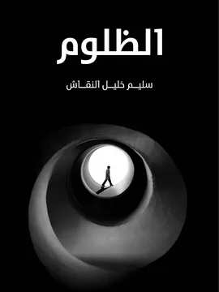

الظلوم

قراءة عربية أصلية محددة النطاق في الصفحات 13 إلى 18 من ملف PDF المرتبط، وليست تلخيصا كاملا للكتاب. نناقش ما تدعمه هذه المقاطع فقط.
الظلوم: ابن الملك ينازع سليمًا حبيبته
في الجزء الثالث من الفصل الأول يدخل سليم على أسما وخالتها لبنى مبشرًا بما لا يسر: ابن الملك يريد أسما امرأة له. ترفض أسما وتقول إنها لا ترضى سواه، فيعترف سليم أنه أخفى عنها أمر عزله من وظيفته، وقد علم أن ابن الملك أمر بعزله، وهو مزمع أن يقاصصه شر قصاص إن لم يتركها، «وأنت تعلمين يا أسما أني لا أقدر أن أقاوم الملوك». وينشد: «إن لي في الحرب صولة ضيغم، ولكن معاداة الملوك عسيرة». ويعزم أن يهيم في البراري، ويتعاهدان على حفظ الوداد: «عاهدت ربي أنني على عهودك ألبث… نبقى نبقى نبقى نبقى في حفظ العهود». ويسأل خالته من أين اهتدى ابن الملك إليها، فتجيب أن أباه رحوم شفوق، «ولكن حاشا لله أن يكون ابن أبيه». ثم تنفرد لبنى متوجعة على الشابين، حتى يدخل عليها الوزير بزي درويش فيخبرها أن إسكندر عدم رشده في هوى أسما، وأنه توجه ليخبر الملك فألقى إليه ورقة بخط الملكة المرحومة كتبتها قبل موتها: «أيها الملك الجليل، ابحث ودقق لتعلم حقيقة حال مولودك، وخذ في ذلك رأي الوزير»، وقد وجدها في مخدعها الذي بقي مقفلًا منذ وفاتها، وأمهل الوزير يومين ليظهر له ما فيها.
زاوية وحدود القراءة
قراءة موجزة من ص ١٣ إلى ص ١٨ من أصل ٧٦ صفحة، تعرض أجزاء من الفصل الأول، لا الكتاب كاملًا.
الطبعة والقراءة
هذه النسخة من الكتاب صادرة ومتاحة مجانًا من مؤسسة هنداوي بشكل قانوني؛ حيث إن نص الكتاب يقع في نطاق الملكية العامة تبعًا لقوانين الملكية الفكرية.
تنزيل PDF المجاني ↓ القراءة والمصدر الرسمي ↗